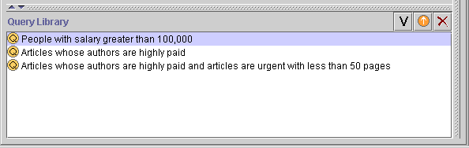

The Query Library allows you to retrieve saved queries.
Note: If you are working on a smaller screen, you may not see this pane. To view or enlarge the Library Pane, drag the slider bar near the bottom of the Query Pane (above the Query Library Pane), or click the up button at the bottom of the Query Pane. See Working With a Small Window for more information.

The Query Library Pane has the following components:
A list of all saved queries.
Buttons that allow you to view, retrieve, or delete a query.
Only the buttons are described further.
The buttons at the right of the pane have the following actions:
| View button: Click this button to view the details for a selected query. | |
| Retrieve button: Click this button to retrieve the query, which puts the query in the Query Pane ready for modification or for finding instances. | |
| Delete button: Click this button to delete the highlighted querie(s). |
Next: Creating a Simple Query